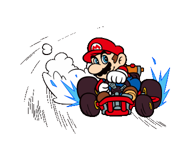

⛐Drift⛐

Introduction
Drifting is more than just a high-speed spectacle—it's an art form, a delicate dance between control and chaos. From screeching tires to clouds of smoke, the world of drifting captivates motorsport fans with its unique blend of precision and power. What started as an underground phenomenon on the winding mountain roads of Japan has evolved into a global motorsport, pushing drivers and cars to their absolute limits. In this article, we'll explore the origins of drifting, the techniques that define it, and how it has shaped the automotive world, both on and off the track.
History of Drifting
Drifting traces its origins back to Japan in the 1970s, on the twisty mountain roads known as touge. In these mountainous regions, a group of daring street racers began experimenting with controlled oversteering, sliding their cars through sharp corners at high speeds. The goal wasn’t just to be fast but to showcase skill and style, a perfect mix of control and risk. This new driving technique quickly grew in popularity among Japan’s car enthusiasts, especially those inspired by the early pioneers of drifting.
One of the key figures in the birth of drifting was Kunimitsu Takahashi, a former motorcycle racer who transitioned to car racing. He was the first to master the art of sliding a car through corners during his racing career in the All Japan Touring Car Championship. His aggressive cornering techniques, which involved maintaining high speeds while allowing the rear tires to lose traction, laid the foundation for drifting as we know it today.
Another significant contributor to the drifting culture was Keiichi Tsuchiya, famously known as the "Drift King." Tsuchiya popularized drifting in the late 1980s when he applied the technique on race tracks and made it part of his competitive driving style. He gained a cult following, thanks to his street racing exploits and his participation in Best Motoring, a popular Japanese car video series. Tsuchiya's iconic 1986 Toyota AE86, a lightweight rear-wheel-drive car, became a symbol of drifting and is still revered by enthusiasts worldwide. Here's an example of his drifting technique:
As the popularity of drifting grew in Japan, it started to gain formal recognition. In 1999, the D1 Grand Prix was launched, becoming the first official drifting championship. The competition brought structure and legitimacy to the sport, with drivers competing not for the fastest lap time but for their ability to execute perfect drifts, judged on speed, angle, and style. This competition drew in the best drifters from across Japan, helping drifting make the leap from an underground movement to an internationally recognized motorsport.
By the early 2000s, drifting began to spread globally, largely due to its appearance in video games, car culture magazines, and films like The Fast and the Furious: Tokyo Drift. These media outlets showcased the allure of drifting to new audiences, sparking interest in Europe, North America, and beyond. In 2004, the United States launched Formula Drift, its own professional drifting series, which has since become one of the most prestigious drift competitions in the world.
Today, drifting is celebrated as both a competitive motorsport and a beloved part of car culture. It has evolved from its humble beginnings on the mountain passes of Japan into a global phenomenon that tests the limits of drivers and machines alike. From local drift events to international competitions, the sport continues to grow, drawing in new fans and drivers eager to master the art of the slide.
How Drifting Works
At its core, drifting is the art of controlling a car while it's sliding sideways through a corner, with the rear tires losing traction while the driver maintains precise control of the vehicle. This dramatic maneuver is not just about losing grip—it’s about manipulating the car’s balance and momentum to keep it in a controlled slide, often at high speeds. To understand how drifting works, we need to break down the techniques, physics, and car mechanics that make this high-skill motorsport possible.
Basic Drifting Techniques There are several methods to initiate a drift, each requiring a different combination of driver input and car setup. Here are some of the most common techniques used in drifting:
- Handbrake Turn (E-Brake Drift): One of the easiest and most common ways to initiate a drift, especially for beginners. The driver pulls the handbrake while steering into a corner, causing the rear wheels to lock and the car to slide. This technique is often used to kick off a drift at slower speeds.
- Power Oversteer (Power Slide): In this technique, the driver uses the car’s raw power to break traction. By applying a sudden burst of throttle in a rear-wheel-drive car while turning, the rear tires lose grip, allowing the car to slide.
- Clutch Kick: This method involves depressing the clutch while revving the engine, then releasing it quickly to send a surge of power to the rear wheels, causing them to spin and break traction. It’s especially useful in lower-powered drift cars where additional torque is needed to initiate the slide.
- Feint Drift: A more advanced technique, this involves the driver steering briefly away from the corner before flicking the car back into the turn. This transfer of weight from one side to the other helps initiate the drift by unsettling the car's rear end.
- Brake Drift: The driver enters the corner at high speed and lightly taps the brake while steering, transferring weight to the front of the car and causing the rear to lose grip.
The Physics of Drifting
Drifting hinges on the delicate balance between traction and momentum. Here’s how it works from a physics perspective:
- Traction Loss: Drifting occurs when the rear tires lose traction but remain within the driver's control. The goal is to maintain a loss of traction in the rear while keeping the front tires gripping the road. This enables the driver to steer through the corner while sliding sideways.
- Counter-Steering: As the car begins to slide, the driver must counter-steer—turn the steering wheel in the opposite direction of the drift—to maintain control and prevent a spinout. For example, if the car’s rear is sliding out to the right, the driver turns the wheel to the left to stabilize the drift.
- Weight Transfer: Effective drifting involves understanding how weight shifts within the car. When a car accelerates, its weight shifts to the rear, while braking or deceleration shifts weight to the front. Drifting techniques often rely on this weight transfer to initiate or maintain a slide. Skilled drifters can manipulate this weight transfer to control the drift more precisely.
- Throttle Control: Throughout the drift, the driver must carefully modulate the throttle to adjust the car’s angle and speed. Applying too much throttle can cause the car to spin, while too little can cause it to regain traction and end the drift.
Car Setup for Drifting
Not all cars are capable of drifting—specific setups are necessary to handle the demands of this motorsport. While it is possible to drift in front-wheel-drive cars, rear-wheel-drive (RWD) or all-wheel-drive (AWD) cars are preferred because they offer better control when inducing oversteer. Here are key aspects of a typical drift car setup:
- Rear-Wheel Drive (RWD): Most drift cars are rear-wheel-drive, as this configuration allows the rear tires to lose traction while the front tires maintain steering control.
- Tires: Drift cars often use special tires with lower grip in the rear to make it easier to initiate and maintain a drift. Some drift drivers may also use worn or inexpensive tires during practice to save money since drifting wears out tires quickly.
- Suspension: A stiff suspension setup is crucial for better weight transfer control. Drift cars are typically lowered to lower the center of gravity and prevent body roll during aggressive maneuvers.
- Limited-Slip Differential (LSD): An LSD ensures that both rear wheels spin together, even when one loses traction, making it easier to initiate and maintain a controlled slide.
- Engine Power: While high horsepower isn't required to drift, many competitive drift cars are heavily modified for more power, allowing the driver to maintain long, sustained drifts at higher speeds.
The Balance Between Art and Science
Drifting is isn't just about brute force or reckless driving—it’s a
sophisticated dance between the driver, the car, and the laws of
physics. Skilled drifters must have an intimate understanding of
their car’s behavior at the limit, making split-second
adjustments to throttle, steering, and braking to keep the car
sliding precisely where they want it. The combination of power,
finesse, and an understanding of mechanics makes drifting both a
science and an art.
Performance and Skill on Track
On the track, drifting showcases the fine balance between car setup, driver skill, and physics. Unlike grip racing, where speed and lap times are the ultimate goals, drifting emphasizes style, angle, and car control at the edge of traction. Each type of driving—drifting and grip—requires different techniques, setups, and priorities. Here’s a breakdown of how performance in drifting compares to traditional grip driving.
Performance Comparison: Drifting vs Grip Driving
| Aspect | Drifting | Grip Driving |
|---|---|---|
| Speed on Track | Generally slower, as the car is intentionally sliding and losing traction. Drifting sacrifices speed for angle and style. | Faster, as the car maintains full traction and aims for the fastest possible lap times. |
| Control | Requires managing loss of traction; precise throttle, steering, and brake inputs needed to maintain controlled slides. | Maintains maximum traction; driver focuses on the best racing line and optimal grip. |
| Cornering | Sliding through corners at a controlled angle, focusing on style and angle rather than speed. | Cars take corners as fast as possible while maintaining full grip. |
| Performance in Rally | Drifting is faster on loose surfaces (gravel, snow) where grip is limited. Rally drivers use controlled slides to maintain speed in tight corners. | Grip driving is slower on loose surfaces due to the limited traction, making it less effective on certain rally stages. |
| Performance on Asphalt | Drifting is slower on paved tracks, where grip driving is more efficient and allows for higher speeds. | Grip driving is much faster on asphalt, as traction is maintained through corners. |
| Car Wear and Tear | High tire wear, as drifting generates extreme heat and friction on the rear tires. Suspension and drivetrain also take a beating. | Lower tire wear compared to drifting, but wear is still significant in high-performance racing environments. |
| Judging Criteria (in Competitions) | Based on speed, angle, line, and style; drifting is as much about aesthetics and showmanship as performance. | Based purely on lap times; fastest car wins without subjective judging. |
Conclusion
Drifting, with its roots in Japan’s mountain passes, has evolved into a global motorsport and cultural phenomenon. What began as a rebellion against traditional racing has become an art form in its own right—one that values style, control, and precision as much as speed. From its unique history to the high-performance skills required to master it, drifting offers a thrilling alternative to conventional motorsports.
On the track, drifting showcases the delicate balance between technique and physics. While it may not always be the fastest way to navigate a corner, especially on asphalt, it remains an unparalleled demonstration of car control. In rally racing, where grip is limited, drifting proves its effectiveness by allowing drivers to maintain speed in treacherous conditions. Whether judged by style or performance, drifting captures the imagination of car enthusiasts and racers alike, standing as a testament to the skill and creativity of those who dare to master the slide.
As motorsport continues to evolve, drifting holds a special place, bridging the gap between competition and artistry. It celebrates the thrill of pushing the limits and keeping a car on the edge of control, turning every corner into a dynamic performance. In this way, drifting not only pushes the boundaries of racing but also keeps alive the spirit of innovation, passion, and pure driving enjoyment.
Thank you for your attention! Спасибо за внимание!